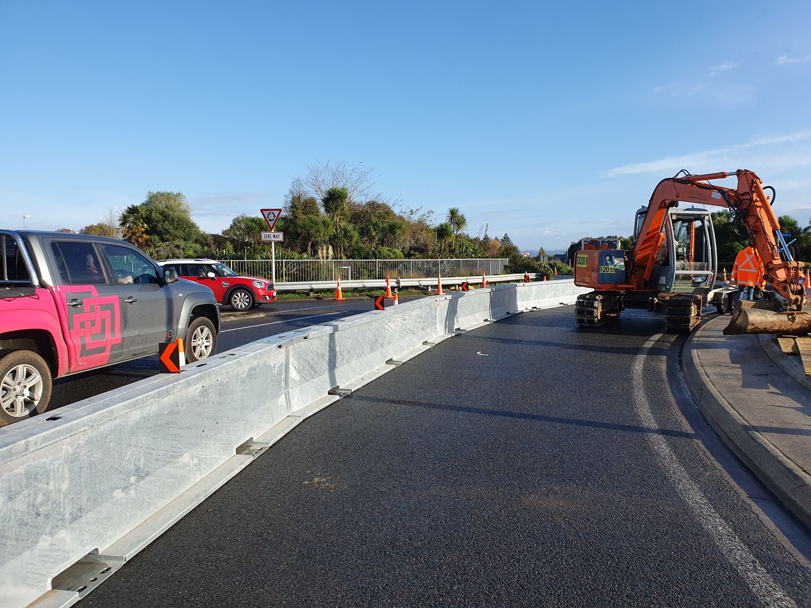

Safe Work Practices
~3 min (interactive)

Plant working behind the barrier line, traffic still flowing safely alongside.
Tap each item to reveal the detail. Work through all six before moving on.
1Check the Traffic Management Plan
Review the TMP or site safety plan before starting work near any barrier line.
2Maintain the Clear/Buffer Zone
Never stand between a barrier and moving traffic — stay within the zone marked on the plan.
3Face Oncoming Traffic
Stay alert and face traffic where possible; never rely on the barrier alone.
4Wear the Correct PPE
Wear the high-visibility PPE required for the site and time of day/night at all times in the work area.
5Use Correct Manual Handling
Use correct technique or mechanical aids to move barrier units — don't work alone on heavy segments.
6Communicate Before You Move Anything
Talk to your TTM/traffic controller before entering or repositioning any part of the barrier line.
Safe Work Practices.
Tap each item to reveal the detail. Work through all six before moving on.
One: check the Traffic Management Plan before starting work near any barrier line.
Two: maintain the clear or buffer zone — never stand between a barrier and moving traffic.
Three: face oncoming traffic and never rely on the barrier alone.
Four: wear the correct high-visibility PPE for the site and time of day, at all times.
Five: use correct manual handling technique or mechanical aids — don't work alone on heavy segments.
Six: communicate with your TTM or traffic controller before entering or repositioning any part of the barrier line.